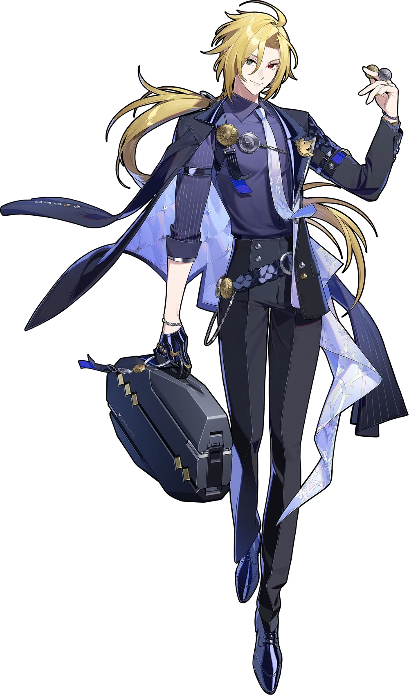

Hugo
Hugo Vlad is the leader of the infamous phantom thief syndicate Mockingbird, who expose the evil deeds of the corrupt and evil of soceity, bringing justice to an unfair world.
In public, Hugo dons the facade of a collector, running an art gallery and making mingling with the elite. From members of TOPS, like the Marcel Group (where his Bangboo, Robin holds a coaching position), to prominent figures like Lord Edmund.
Whilst performing heists or fighting, Hugo bears a smug yet cruel demeanor, usually showing his flair for the dramatic with edgy monologues. He uses an array of tools and weapons, including a flip knife and coins disguised as darts that he hides in his suitcase - that also doubles as an intimidating scythe capable of firing beams of ice.